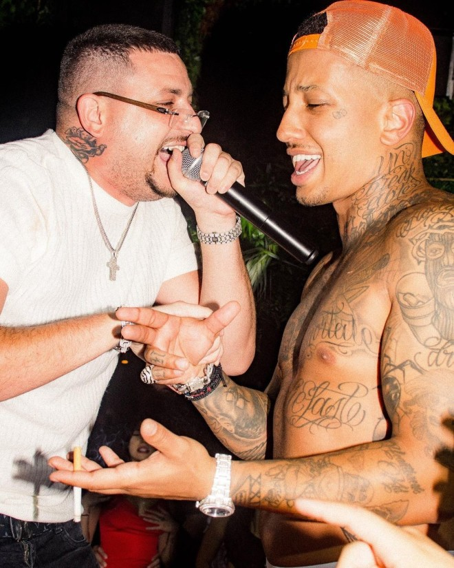
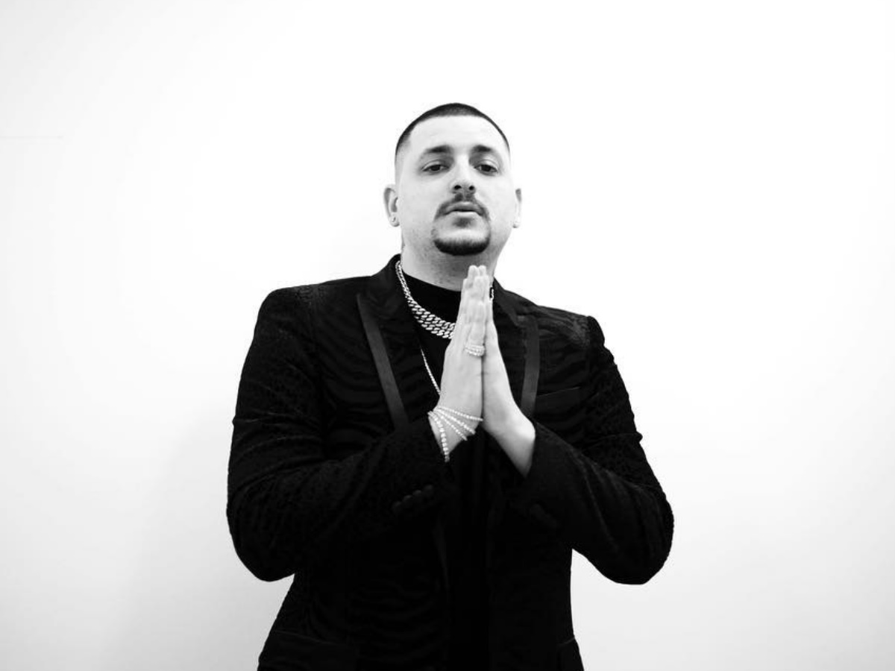

| Ο Mad Clip (Peter-Παναγιώτης Αναστασόπουλος), (Νέα Υόρκη, 25 Μαΐου 1987 - Βουλιαγμένη Αττικής 2 Σεπτεμβρίου 2021) ήταν Ελληνοαμερικανός τράπερ και επιχειρηματίας. Ήταν μέλος της Capital Music έχοντας κυκλοφορήσει πολλές επιτυχίες όπως το κομμάτι Dealer, μετά από το οποίο ακολούθησαν πολλά ακόμα hits όπως το Hustla , Baby , ΧΙΛΙΟΜΕΤΡΑ, Areti , Gucci, Συνθήκες, ΜΑΜΑ, Κότερα, Ελπίδα και άλλα, τα οποία ξεπέρασαν τις 10 εκατομμύρια προβολές στο YouTube. Κυκλοφόρησε 4 άλμπουμ μεταξύ αυτών το Super trapper, O Amerikanos LP, Super Trapper 2 και το Still Active σε συνεργασία με τον Strat. Από την αρχή της μουσικής του σταδιοδρομίας διατηρούσε το καλλιτεχνικό όνομα Mad Clip το οποίο προέρχεται από τα αρχικά "Money and Drugs, Can’t Live in Poverty". |  | |
| Ο ράπερ Τάκι Τσαν τον βοήθησε να κυκλοφορήσει το πρώτο του single στα ελληνικά με τίτλο "Είμαι Τρελός" σε ηλικία 27 ετών. Στη συνέχεια, υπέγραψε συμβόλαιο με την δισκογραφική εταιρεία Capital Music. Υπήρξε από το 2004 μέλος του συγκροτήματος Οutkast Excellence μαζί με τους Constantine the G και N.O.E., όπου ερμήνευε σε αγγλικό στίχο. Είχε συνεργαστεί με την Ελένη Φουρέιρα, την Ζοζεφίν, αλλά και γνωστούς καλλιτέχνες του χώρου της ραπ και της τραπ. | ||
|  | Ο Mad Clip σκοτώθηκε έπειτα από τροχαίο στις 3 Σεπτεμβρίου 2021, στις 02:00, στη λεωφόρο Αθηνάς και Φανερωμένης στη Βουλιαγμένη. Σύμφωνα με όσα έγιναν γνωστά οδηγούσε με μεγάλη ταχύτητα και έχασε τον έλεγχο του αυτοκινήτου. Χρειάστηκαν πάνω από δύο ώρες για να απεγκλωβιστεί και έπειτα να μεταφερθεί αρχικά στο Ασκληπιείο Βούλας, όπου διαπιστώθηκε ο θάνατος του. | |